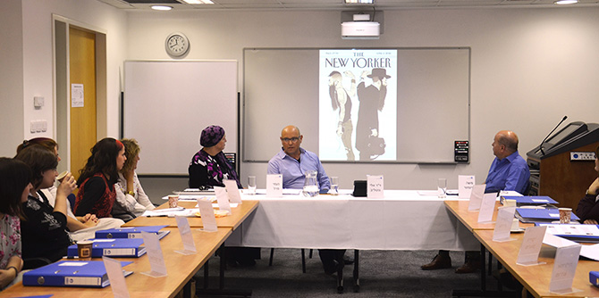

On September 22, 2016, the members of Cohort 4 of the Mandel Programs for Leadership Development in the Haredi Community began their two-year journey of learning and development. This group of 17 ultra-Orthodox women leaders represents the full variety of sub-groups within the Haredi community: Ashkenazi and Sephardi, Hassidic and non-Hassidic, newly-religious and Haredi from birth. The new group includes women with rich and ground-breaking professional experience in the fields of education, employment services, media, law, health, and welfare.
“I am delighted and excited to welcome another diverse group of women leaders to the Mandel Leadership Institute. These women are among the most industrious leaders in Israel. They are busy with their jobs, community work, and caring for their families, and are devoting themselves to study and to planning social and educational initiatives of utmost importance both for the Haredi community and for Israeli society as a whole,” said Dr. Eli Gottlieb, director of the Mandel Leadership Institute and vice president of the Mandel Foundation–Israel, in his welcoming address to the new fellows.
The opening lecture of the year was delivered by Dr. Meir Buzaglo, who teaches philosophy at the Hebrew University of Jerusalem. Dr. Buzaglo reviewed some of the essential characteristics of leaders, including the need to constantly review and sharpen one’s vision and to adapt it to changing realities.
A week earlier, on September 15th, the 20 men who are fellows in Cohort 3 of the Mandel Programs for Leadership Development in the Haredi Community began their second year of studies with a site visit to the Retorno Addiction Treatment Center in Givat Shemesh.
All the fellows, both individually and as a group, are beginning a journey that will culminate in their final projects. As they describe it, the voyage appears to be long and difficult at the outset, but through individual sessions with their tutors they understand that, like every long journey, this one begins with one small step.

{kind=link}